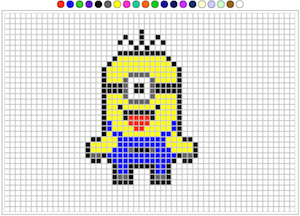

Home
HomeWeek Three
- Man-Handling the DOM
11/15/15
Time has never been faster than it is right this moment. This is last week was the first time I have really struggle. It was not the higher order functions or or working with the DOM, it is over complication. I would come to a problem, know exactly what I wanted to do, and not even come close to getting it error free.
Week Two
- position: irrelevant;
11/8/15
I am writing this on a Sunday. I have had about 48 hours for the emotional whirl wind of CSS to settle. The ring leaders are turning into guides. They are slowly opening the flood gates and letting the air out of our arm floatees. I can understand the logic behind this strategy, they are not here to lollygag and neither am I. The week started off very CSS oriented, and I believe I have come a long way with it. By mid week we dove head first in the javascript world. I can understand the analogy than people say: it is like learning a foriegn language. Except spanish has never sent me into an infinite loop. But fudge it, I am willing to take on any objects they want to throw my way.
Week One
- Survival of the gittest
10/30/15
There are twenty of us that signed a contract to give up our normal lives. The terms & conditions state that if we came out the other side alive, we would never be the same.
Day one all twenty of us were full of smiling greetings. As the days went on and the ring leaders started adding the heat and weight to each of us, I could see that some were starting to lose touch with reality. Hours on end we move our fingers a half an inch at a time. Our hands are being sculped by the Macbook gods with every commit. My eyes move ten times faster than my hands but I sometimes wonder when they will be surpassed. I haven't played Call of Duty in over a week, wonder if all my virtual friends miss me. Tell my family I miss them and I'll see them in six months.